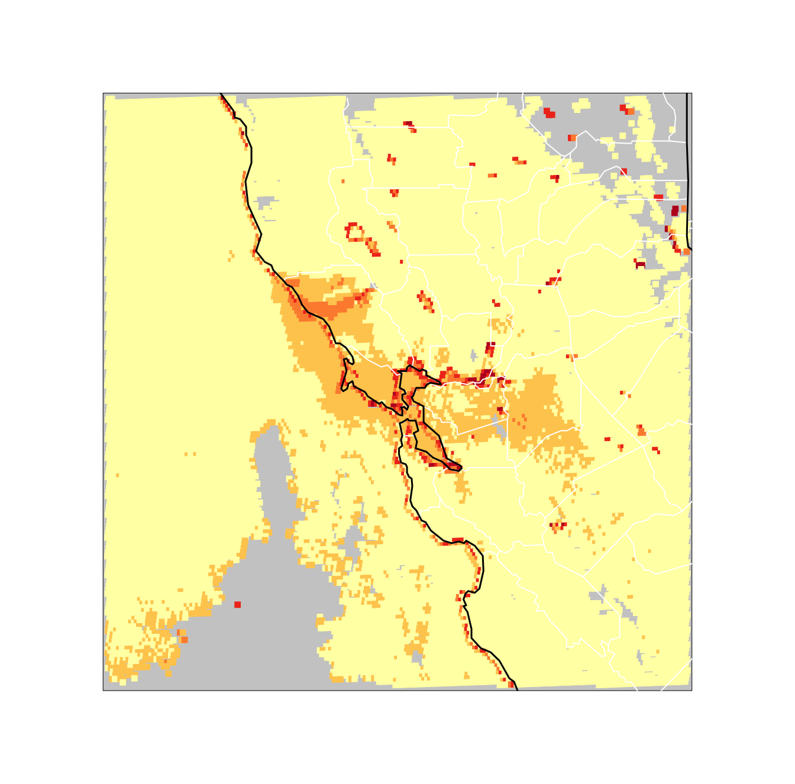

Kincade_Fire_Example.RmdThe Kincade Fire, which burned in Sonoma County from October 23 to November 6, was the largest wildfire in California during 2019 and the largest fire ever in Sonoma County. This example will show the smoke movement from this fire during the day on October 29, 2019 using the MazamaSatelliteUtils R package. In it, we will check for data on the server, download it, visualize it in several ways and finally create a movie which shows smoke movement during the day.
10/29/2020 Satellite Image of Kincade Fire
In order to analyze the AOD levels for the Daytime period on Oct 29, a great many files will need to be downloaded and processed. It will be beneficial to specify a project directory for this particular project, where only data pertaining to this specific date and location is stored.
GOES-West AOD data became available from the BlueSky/Fire site beginning on August 28, 2019. In order to have a sense of how much data we will need to obtain for this project, our first step will be to check on the Fire server to see what AOD data is available on that day. Furthermore, as we are only interested in seeing what data is available during local daytime hours in Sonoma, CA, we will limit our file-listing to only Daytime hours.
goesaodc_listDaytimeFiles(satID = "G17",
datetime = "2019-10-29",
timezone = "America/Los_Angeles",
useRemote = TRUE)
[1] "OR_ABI-L2-AODC-M6_G17_s20193021401196_e20193021403569_c20193021404452.nc"
[2] "OR_ABI-L2-AODC-M6_G17_s20193021406196_e20193021408569_c20193021409556.nc"
[3] "OR_ABI-L2-AODC-M6_G17_s20193021411196_e20193021413569_c20193021414550.nc"
[4] "OR_ABI-L2-AODC-M6_G17_s20193021416196_e20193021418569_c20193021419500.nc"
[5] "OR_ABI-L2-AODC-M6_G17_s20193021421196_e20193021423569_c20193021424570.nc"
[6] "OR_ABI-L2-AODC-M6_G17_s20193021426196_e20193021428569_c20193021429586.nc"
[7] "OR_ABI-L2-AODC-M6_G17_s20193021431196_e20193021433569_c20193021434537.nc"
<snip>
[138] "OR_ABI-L2-AODC-M6_G17_s20193030126196_e20193030128569_c20193030130466.nc"
[139] "OR_ABI-L2-AODC-M6_G17_s20193030131196_e20193030133569_c20193030135512.nc"
[140] "OR_ABI-L2-AODC-M6_G17_s20193030136196_e20193030138569_c20193030141011.nc"
[141] "OR_ABI-L2-AODC-M6_G17_s20193030141196_e20193030143569_c20193030145552.nc"
[142] "OR_ABI-L2-AODC-M6_G17_s20193030146196_e20193030148569_c20193030151118.nc"
[143] "OR_ABI-L2-AODC-M6_G17_s20193030151196_e20193030153569_c20193030156149.nc"
[144] "OR_ABI-L2-AODC-M6_G17_s20193030156196_e20193030158569_c20193030201120.nc"As we can see from the date strings in the truncated file listing output above, there are 144 files available during the Daytime hours of October 29th. These files span the datetimes from s20193021401196 until e20193030158569. Some explanation about how to read these date strings is shown here.
s20193021401196...
s = "start"
2019 = Year
302 = Ordinal Day
14 = 24hr Day Hour
01 = Minute
19 = Seconds
6 = Milliseconds
e20193030158569...
e = "end"
2019 = Year
303 = Ordinal Day
01 = 24hr Day Hour
58 = Minutes
56 = Seconds
9 = MillisecondsIn other words, the files needed to display AOD during Daytime hours span from roughly 2019-10-29 14:00 UTC until 2019-10-30 01:00 UTC. goesaodc_listDaytimeFiles() automatically took the input date of “2019-10-29” and the Olson timezone of “America/Los_Angeles” and performed the calculations needed to obtain the Sunrise and Sunset times for that timezone on that date. We can verify those times using the getDaylightHours() utility function that is included in the package.
getDaylightHours(datetime = "2019-10-29", timezone = "America/Los_Angeles")
$sunrise
[1] "2019-10-29 07:02:54 PDT"
$sunset
[1] "2019-10-29 18:18:57 PDT"And when we convert those times back into UTC, we see that we match the start and end times of our available files.
start <- MazamaCoreUtils::parseDatetime("2019-10-29 07:02:54", timezone = "America/Los_Angeles")
end <- MazamaCoreUtils::parseDatetime("2019-10-29 18:18:57", timezone = "America/Los_Angeles")
lubridate::with_tz(start, tzone = "UTC")
[1] "2019-10-29 14:02:54 UTC"
lubridate::with_tz(end, tzone = "UTC")
[1] "2019-10-30 01:18:57 UTC"NOTE: It is important to remember that MazamaSatelliteUtils uses the entire hour as it’s base unit of time.
Downloading the AOD data for our timespan of interest can be easily accomplished by using the goesaodc_downloadDaytimeAOD() function, which works very similarly to goesaodc_listDaytimeFiles().
goesaodc_downloadDaytimeAOD(satID = "G17",
datetime = "2019-10-29",
timezone = "America/Los_Angeles",
verbose = TRUE)
#Downloaded OR_ABI-L2-AODC-M6_G17_s20193021401196_e20193021403569_c20193021404452.nc
#Downloaded OR_ABI-L2-AODC-M6_G17_s20193021406196_e20193021408569_c20193021409556.nc
#Downloaded OR_ABI-L2-AODC-M6_G17_s20193021411196_e20193021413569_c20193021414550.nc
#<snip>NOTE: By default the download function does not show the filenames being downloaded. The “verbose” parameter must be set to “TRUE” in order for them to display.
An alternative method to download the files would be to use the core goesaodc_downloadAOD() function with a time range that corresponds to the Daylight hours obtained earlier using getDaylightHours(). An example of this method is shown below, as it is a useful way to obtain a smaller range of time than a full day.
goesaodc_downloadAOD(satID = "G17", datetime = "2019-10-29 07", endTime = "2019-10-29 18", timezone = "America/Los_Angeles")Whichever way you’ve decided to download the files, it’s now a good idea to make sure that you’ve downloaded the data that you think you have. This is particularly a good idea if you have done the download without specifying “verbose = TRUE”. If we use goesaodc_listDaytimeFiles() in it’s default mode, with useRemote = FALSE, we can confirm that we have 144 files downloaded and residing in our project directory, which we set using setSatteliteDataDir.
goesaodc_listDaytimeFiles(satID = "G17",
datetime = "2019-10-29",
timezone = "America/Los_Angeles")
<snip>
[140] "OR_ABI-L2-AODC-M6_G17_s20193030136196_e20193030138569_c20193030141011.nc"
[141] "OR_ABI-L2-AODC-M6_G17_s20193030141196_e20193030143569_c20193030145552.nc"
[142] "OR_ABI-L2-AODC-M6_G17_s20193030146196_e20193030148569_c20193030151118.nc"
[143] "OR_ABI-L2-AODC-M6_G17_s20193030151196_e20193030153569_c20193030156149.nc"
[144] "OR_ABI-L2-AODC-M6_G17_s20193030156196_e20193030158569_c20193030201120.nc"There are a variety of ways to visualize the AOD data, but for now, it’s handy to just have a look at a single snapshot of the data. To do that, we select a file from the set we downloaded earlier, crop it to the area near Santa Rosa, CA, and have a look at it. But first we run installGoesGrids() to create the spatial grids that will be used to tie the pixel data from the satellite image to points on the ground
installGoesGrids()
nc_file <- goesaodc_listFiles(satID = "G17",
datetime = "2019-10-29 10",
timezone = "America/Los_Angeles")[1]
nc_handle <- goesaodc_openFile(nc_file)
kincade_bbox <- c(-125, -120, 36, 40)
goesaodc_areaPlot(list(nc_handle), kincade_bbox)
We can clearly see the heavy smoke plume coming out of the Santa Rosa region towards the Southwest, as well as dense smoke that is drifting throughout the rest of the Bay Area.
It’s relatively straight-forward to create a movie of the AOD changes throught the day. Use the createSpatialPointsVideo_exec.R file located in local_executables. It requires that ffmpeg be installed. To create the movie, execute the following command:
./createSpatialPointsVideo_exec.R --datetime="2019-10-29" \
-s CA -x AOD -q 3 -r 2 -o ~/Desktop/ -v TRUE \
--SpatialDataDir="~/Data/Spatial" \
--SatelliteDataDir="~/Data/kincade" \
--bbox="-124, -120, 36.5, 40.5" \
--fullDay="TRUE"